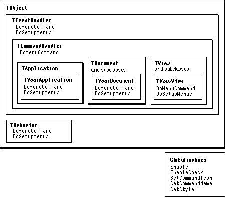

Recipes--Menus
The recipes and sample code in this section summarize how to work with menu commands and demonstrate how to add a menu command to a menu, how to create a hierarchical menu, how to create a pop-up menu from a resource template, and how to add a menu item to the help menu. Some of the classes and methods you use to work with menus are shown in Figure 12-5.Figure 12-5 Classes, methods, and global routines for working with menus

Working With Menus--A General Outline
This outline describes the steps most MacApp applications take to work with menus. MacApp uses resources to specify menus and menu items. To add menu commands to your application, you add items to your resource file definitions and add code to enable and respond to those items.To add a menu command to your application, you perform these steps:
The next recipe in this chapter demonstrates the steps for adding a menu command to a menu, enabling it, and responding when a user chooses that command. "Recipe--Defining a Recordable Command Class," beginning on page 353, shows how to implement a similar command that is recordable and supports handling by attached scripts.
- Define a command number constant for the menu item.
- Add the menu item to your resource file.
- Except for very simple commands, define a command class with a
DoItmethod that performs the command operation. If the command is undoable, implementUndoItandRedoItmethods as well.- Decide which of your event-handling classes will handle the command. Override its
DoSetupMenusmethod to enable the menu item when appropriate.- Override the
DoMenuCommandmethod to handle the menu command:
- For a very simple command, perform the command action.
- For a more complicated command, create and post a command object to perform the command operation.
- If the command is recordable or can be handled by an attached script, set the
fUseAppleEventfield toTRUEand override theMakeAppleEventmethod to create an Apple event that describes the action.Recipe--Adding, Enabling, and Responding to a Menu Command
This recipe shows how to add the Invert Icon menu command to the Icon menu in the IconEdit sample application. To add a menu command, enable it, and respond to it, you perform these steps:The sample code shown in this recipe is from the IconEdit application.
- Define a command number constant for the menu item.
- Add the menu command to the
'CMNU'resource for the menu.- Enable the menu command in a
DoSetupMenusmethod.- Respond to the menu command in a
DoMenuCommandmethod.Define a Command-Number Constant for the Menu Item
You define a command-number constant for the menu item in your resource file and in your code file. In the IconEdit application, the definitions are, in the fileIconEdit.r,#define cInvert1002and, in the fileUIconEdit.cp,const CommandNumber cInvert = 1002; // Invert menu command.Make sure the definitions match--otherwise, your application will be unable to respond correctly to the menu choice.Add the Menu Command to the 'CMNU' Resource
The'CMNU'resource for the Icon menu is defined in the fileIconEdit.r. The following line from that resource specifies the Invert menu item:/* [4] */"Invert", noIcon, "I", noMark, plain, cInvert;This line specifies that the item's name is Invert, that it has no icon drawn beside it in the menu, that it can be specified by the Command-I keyboard equivalent, that the item is not checked, and that it is displayed in plain text.When a user chooses this menu command, MacApp passes the
cInvertvalue to theDoMenuCommandmethod of objects in the target chain.Enable the Menu Command in a DoSetupMenus Method
You normally enable a menu command in theDoSetupMenusmethod of the event handler that will handle the command. TheDoSetupMenusmethod is called only for objects in the target chain, so a menu command will be enabled only if an object in the target chain is ready to handle that menu command.The IconEdit application handles the Invert command in the
TIconDocumentclass, since whenever a document is open its icon can be inverted. TheDoSetupMenusmethod of theTIconDocumentclass contains the following line to enable the Invert menu command:Enable(cInvert, TRUE); // The icon can always be inverted.Respond to the Menu Command in a DoMenuCommand Method
When a user chooses this menu command, MacApp passes thecInvertvalue to theDoMenuCommandmethod of objects in the target chain. For a very simple command,DoMenuCommandmay respond by performing an action directly. It is usually better style to perform the action with a command object. Using a command object helps factor your application and makes it easier to support recording and attached scripts. This is what IconEdit does in theDoMenuCommandmethod of theTIconDocumentclass:void TIconDocument::DoMenuCommand (CommandNumber aCommandNumber) { switch (aCommandNumber) { case cInvert: TInvertCommand *anInvertCommand = new TInvertCommand; anInvertCommand->IInvertCommand(this); anInvertCommand->fUseAppleEvent = TRUE; PostCommand(anInvertCommand); break; . . . default: Inherited::DoMenuCommand(aCommandNumber); break; } }The DoMenuCommand method sets the invert command object'sfUseAppleEventfield toTRUEbecause the invert command supports recording and allows attached scripts to respond to the command. "Recipe--Defining a Recordable Command Class," beginning on page 353, provides more detail about adding scripting support to a command class.Recipe--Using a Hierarchical Menu
This recipe is based on the hierarchical Format menu in the DemoText sample application. That menu has hierarchical submenus for style, size, font, and color. For brevity, this recipe concentrates on the Color submenu. Refer to the DemoText source files for details regarding the other Format submenus.To create a hierarchical menu, you perform these steps:
The sample code shown in this recipe is from the DemoText application.
- Define constants for the hierarchical menu and menu items.
- Define a menu-bar resource that includes the name of your hierarchical menu.
- Define a menu-bar resource with the items on your hierarchical menu.
- Define a
'CMNU'resource for your hierarchical menu.- Define a
'CMNU'resource for each submenu.- Enable your hierarchical menu items in a
DoSetupMenuCommandmethod.- Respond to hierarchical menu choices in a
DoMenuCommandmethod.Define Constants for the Hierarchical Menu and Menu Items
The DemoText application defines menu constants in its resource definition fileDemoText.r:// Menu IDs. #define mFormat 5 // Hierarchical submenus. #define mStyle 8 #define mSize 9 #define mFont 10 #define mColor 11 // Byte values of hierarchical submenus to use in 'CMNU' resource. #define hmStyle "\0x08" #define hmSize "\0x09" #define hmFont "\0x0A" #define hmColor "\0x0B" // Command numbers. #define cColorText761 #define cColorBackground 762The definition of mFormat is used in the application's'MBAR'resource (page 318).The definitions of
mStyle, mSize, mFont, and mColor are used in the'MBAR'resource for the hierarchical submenus (page 319).The definitions of hmStyle, hmSize, hmFont, and hmColor are used in the
'CMNU'resource that defines the Format menu (page 319). Note that these values must be defined in byte format.The definitions of cColorText and cColorBackground are used in the
'CMNU'resource that defines the Color menu (page 320).Define a Menu-Bar Resource That Includes Your Hierarchical Menu
The following'MBAR'resource, defined with the MacApp constant kMBarDisplayed, specifies the menus for the application's menu bar./* Menus displayed in the menu bar, including hierarchical menus. */ resource 'MBAR' (kMBarDisplayed, #if qNames "kHierDisplayedMBar", #endif nonpurgeable) { { mApple; mFile; mEdit; mText; mFormat } };
- Note
- You can build a version of the DemoText application that supports PowerTalk mailers. References to PowerTalk are omitted from this recipe but are described in the recipes in Chapter 29, "Working With PowerTalk Mailers."

Define a Menu-Bar Resource With Your Menu Items
The following'MBAR'resource, defined with the MacApp constant kMBarHierarchical, specifies the menu items to appear on the Format hierarchical menu./* Hierarchial Submenus */ resource 'MBAR' (kMBarHierarchical, #if qNames "kMBarHierarchical", #endif nonpurgeable) { {mStyle; mSize; mFont; mColor} };Define a 'CMNU' Resource for Your Hierarchical Menu
You need to tell MacApp which submenus will appear in your hierarchical menu. You do that by creating a'CMNU'resource for the menu. The following is the'CMNU'resource for the Format menu in the DemoText application:// Hierarchical Format menu with style, size, and font submenus. resource 'CMNU' (mFormat, #if qNames "mFormat", #endif nonpurgeable) { mFormat, textMenuProc, EnablingManagedByMacApp, enabled, "Format", { /* [ 1] */"Style",noIcon, kHierarchicalMenu, hmStyle, plain, cStyle; /* [ 2] */"Size",noIcon, kHierarchicalMenu, hmSize, plain, cSize; /* [ 3] */"Font",noIcon, kHierarchicalMenu, hmFont, plain, cFont; /* [ 4] */"Color",noIcon, kHierarchicalMenu, hmColor, plain, cColor } };For each menu item, the MacApp constant kHierarchicalMenu appears in the position where you would normally specify a Command-key equivalent. kHierarchicalMenu specifies that these items represent hierarchical menus; for each such menu item there is a corresponding'CMNU'resource.Define a 'CMNU' Resource for Each Submenu
The DemoText application supplies a'CMNU'resource for each submenu in the hierarchical Format menu. Shown here is the resource for the Color submenu:resource 'CMNU' (mColor, #if qNames "mColor", #endif nonpurgeable) { mColor, textMenuProc, EnablingManagedByMacApp, enabled, "Color", { /* [ 1] */"Set text color...",noIcon,"T",noMark,plain,cColorText; /* [ 2] */"Set background color...", noIcon,"K",noMark,plain,cColorBackground } };This menu contains items for setting the text color and the background color.Enable Hierarchical Menu Items in a DoSetupMenus Method
You enable menu items on a hierarchical menu just as you do other menu items, in theDoSetupMenusmethod of the event-handler object responsible for handling the menu commands. The DemoText application enables Format menu items in the TTEDocument class:void TTEDocument::DoSetupMenus() { . . . Enable(cColorText, (qNeedsColorQD || HasColorQD())); Enable(cColorBackground, (qNeedsColorQD || HasColorQD())); . . . }Both items in the Color menu are enabled if the application requires Color QuickDraw (qNeedsColorQD) and if Color QuickDraw is available (HasColorQD()).Respond to Hierarchical Menu Choices in a DoMenuCommand Method
Your application responds to user menu choices from a hierarchical menu just as it does to other user menu choices, in the DoMenuCommand method of the event-handler object responsible for handling the menu commands. The DemoText application handles Format menu items in the TTEDocument class:void TTEDocument::DoMenuCommand(CommandNumber aCommandNumber) { . . . switch (aCommandNumber) { . . . case cColorText: this->DoColTextChange(); break; case cColorBackground: this->DoColBackChange(); break; . . . } // End switch. . . . }Note that the DoMenuCommand method calls other document methods to handle the Color menu commands. For a very simple command, these methods might perform the command action. In fact, DoColBackChange does just that to change the background color, while DoColTextChange creates an undoable command to change the text color.Recipe--Creating a Pop-up Menu From a Resource Template
You can define a pop-up menu in your resource file and use a view-editing application to insert the pop-up menu into a view. You can then create your pop-up menu with MacApp's global view server object. This recipe shows how the DemoDialogs application inserts a baud rate pop-up menu into the window created by the "Views by Templates" menu command.To create a pop-up menu from a resource template, you perform these steps:
The sample code shown in this recipe is from the DemoDialogs application.
- Define a menu-number constant for the pop-up menu.
- Define command-number constants for the pop-up menu items, if desired.
- Define a
'CMNU'resource for the pop-up menu.- Define a
'View'resource for the window or view to contain the
pop-up menu.- Use MacApp's global view server object to create the pop-up menu.
Define a Menu-Number Constant for the Pop-up Menu
You define a menu-number constant for the pop-up menu item in your resource file. The DemoDialogs application does so in the fileDemoDialogs.r:#define kBaudPopup 236Define Command-Number Constants for the Pop-up Menu Items
Assign command-number constants to your pop-up menu items only if you wish to respond to user pop-up menu choices based on the command number of the chosen item rather than on its position in the menu. The DemoDialogs application creates the Baud Rate pop-up menu only for display, so it uses the MacApp-defined constantnocommand(see the'CMNU'resource in the next section)."Responding to a User Menu Choice," beginning on page 311, shows how your application can respond to a menu command specified by a pop-up menu choice.
Define a 'CMNU' Resource for the Pop-up
The DemoDialogs application defines the following'CMNU'resource in the fileDemoDialogs.r.resource 'CMNU' (kBaudPopup) { kBaudPopup, textMenuProc, allEnabled, enabled, "Baud:", { /* [1] */"300", noIcon, noKey, noMark, plain, nocommand; /* [2] */"1200", noIcon, noKey, noMark, plain, nocommand; /* [3] */"2400", noIcon, noKey, noMark, plain, nocommand; /* [4] */"9600", noIcon, noKey, noMark, plain, nocommand; /* [5] */"14400",noIcon, noKey, noMark, plain, nocommand } };This menu defines menu items for setting the baud rate to values between 300 and 14,400. No command numbers are associated with the menu items.Define a 'View' Resource for the View to Contain the Pop-up
The DemoText application defines a'View'resource with a window and view hierarchy for displaying various types of subviews. It also defines a'View'resource for a view containing several pop-up menus. The next section describes how the application uses these resources. Both of these resources are too lengthy to reproduce here, but you can examine them in the fileDemoDialogs.r. The window and view hierarchy is a'View'resource with IDcTemplateViews, while the view with the pop-up menus is a'View'resource with IDcPopupExample.For information on how to create a view resource, see "Working With View Resource Templates," beginning on page 425.
Use the Global View Server Object to Create the Pop-up
To initialize its main window from a template, the DemoDialogs application calls theNewTemplateWindowmethod of thegViewServerobject. It then calls theDoCreateViewsmethod to create a view object for the pop-up subview, specifying a dialog view from the main window as the pop-up view's superview. As a result, the view containing several sample pop-up menus, including the Baud Rate menu, becomes a subview of the main window.void TTestApplication::MakeTemplateViews(CommandNumber aCommandNumber) { TWindow *aWindow; TDialogView *aDialogView; TPopup *aPopup; // Create a main window and view. aWindow = gViewServer->NewTemplateWindow( (short)aCommandNumber, NULL); FailNIL(aWindow); // Get a reference to a dialog view in the window. aDialogView = (TDialogView *)(aWindow->FindSubView('DLOG')); FailNIL(aDialogView); . . . // Create a subview containing several pop-up menus; specify // the dialog view as its superview. aPopup = (TPopup *)(gViewServer->DoCreateViews( NULL, aDialogView, cPopupExample, gZeroVPt))); FailNIL(aPopup); . . . aWindow->Open(); }Recipe--Adding an Item to the Help Menu
The Help menu appears near the right side of the menu bar and displays help-related menu items such as Show Balloons/Hide Balloons. Many programs add an item to this menu to provide application-specific help. MacApp provides a mechanism to add Help menu items and respond to them, though you must supply the code to actually provide help.To add a menu item to the Help menu and respond when that item is chosen, you perform the following steps:
The sample code shown in this recipe is built on the IconEdit application.
- Define a command-number constant for the item.
- Override the
AddHelpMenuItemsmethod in your application class and call thegMenuBarManager->AddHelpMenuItemmethod for the item.- Override the
DoMenuCommandmethod in an appropriate command-handler class to respond to your command number.Define a Command-Number Constant
To identify your Help menu item, you define a command-number constant, as shown in previous recipes, using code like the following:const CommandNumber cIconHelpMenuItem = 10009;Choose a command number outside the range used by MacApp (negative numbers and positive numbers up to 999). Make sure the command number is unique within your application.Override AddHelpMenuItems in Your Application Class
The version of InstallHelpMenuItems inTApplicationdoes nothing. You override this method by adding a line like the following to the header file for your application class:virtual void InstallHelpMenuItems(); // Override.Then you create a version of InstallHelpMenuItems that adds your menu item to the Help menu. For the IconEdit application, the InstallHelpMenuItems method could look like the following:void TIconEditApplication::InstallHelpMenuItems() // Override. { // Call a method of the global menu bar manager to install // a Help menu item with our defined menu constant. gMenuBarManager->AddHelpMenuItem( "^0 Help", cIconHelpMenuItem ); }TheAddHelpMenuItemmethod looks for the characters^0within the passed string and replaces them with the application's runtime name. The resulting Help menu item text is "IconEdit Help" (if the application name is IconEdit).AddHelpMenuItemcalls theTApplication::GetApplicationNamemethod, which calls the ToolboxGetProcessInformationroutine to obtain the application's name.Override DoMenuCommand
When a user chooses the Help command, the command number you defined is dispatched to the DoMenuCommand method of the current target object. To handle the command, your application should override the DoMenuCommand method in a command-handling class that is normally part of the target chain--the application class is a good candidate. The IconEdit application might handle the cIconHelpMenuItem command by overriding DoMenuCommand as follows:void TIconEditApplication::DoMenuCommand (CommandNumber aCommandNumber) { switch (aCommandNumber) { // Respond to our constant for the Help menu item. case cIconHelpMenuItem: this->DoApplicationHelp(); break; . . . } // End switch. }You implement the DoApplicationHelp method to display application-specific help.